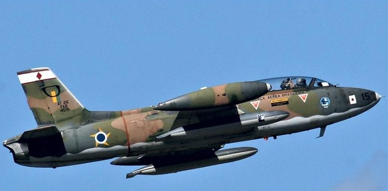

O EMBRAER/AERMACCHI EMB-326 GB é um avião para dois tripulantes, destinado inicialmente ao treinamento de pilotos. Voou pela primeira vez em 1957, sendo produzido, sob licença da companhia italiana “Aermacchi”, por África do Sul, Austrália e Brasil. Esses aviões combateram em vários conflitos africanos e na “Guerra das Malvinas” (1982).
A Força Aérea Brasileira operou o “Xavante”, primeiro avião de caça a jato fabricado no Brasil, de 1971 a 2010, em missões de ataque a alvos aéreos e de superfície. O exemplar em exposição (matrícula FAB 4462) foi o primeiro produzido pela EMBRAER e fez seu primeiro vôo em 3 de setembro de 1971, tendo pertencido a vários esquadrões da FAB até ser desativado e entregue ao Museu Aeroespacial em 2012.
| Fabricante: | Empresa Brasileira de Aeronáutica S.A. - Brasil, sob licença da Aeronáutica Macchi SpA – Itália |
| Motor: | Turbojato Rolls-Royce Bristol Viper 20 Mk 540 de 3.410 lb de empuxo |
| Desiginação Militar: | AT-26 |
| Comprimento: | 10,65 m |
| Envergadura: | 10,85 m |
| Altura: | 3,72 m |
| Peso vazio: | 2474 kg |
| Velocidade máxima: | 867 km/h |
| Alcance: | 1850 km |
| Armamento: | 6 pontos fixos para até 1.814 kg de cargas externas, sob as asas, incluindo 2 metralhadoras Browning .50” |